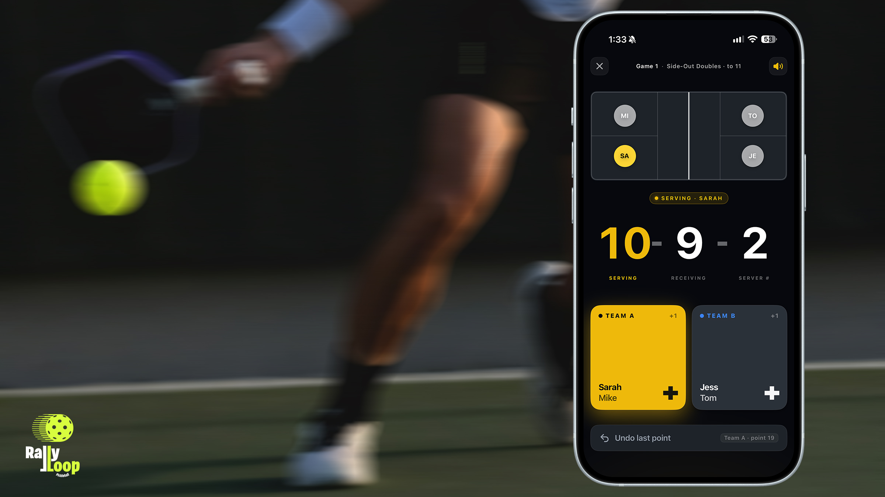
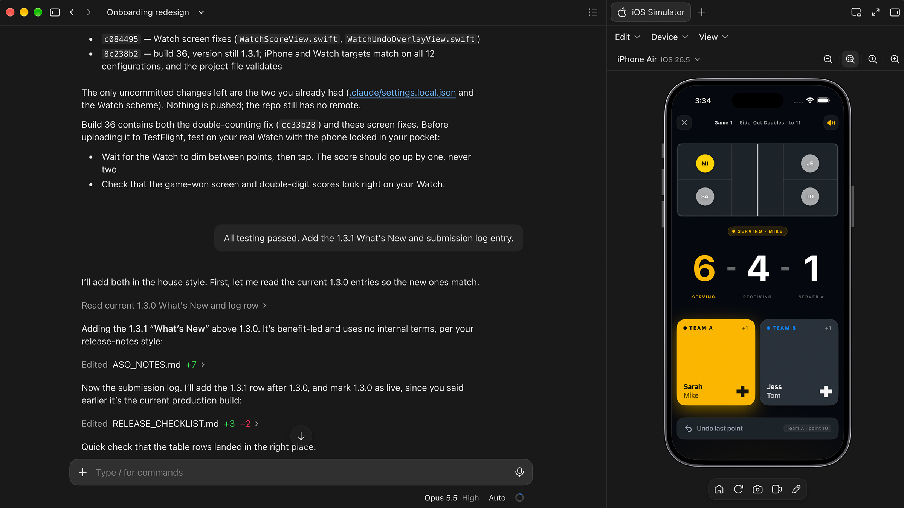
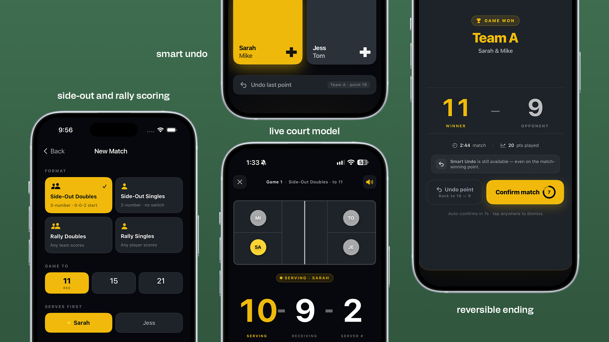
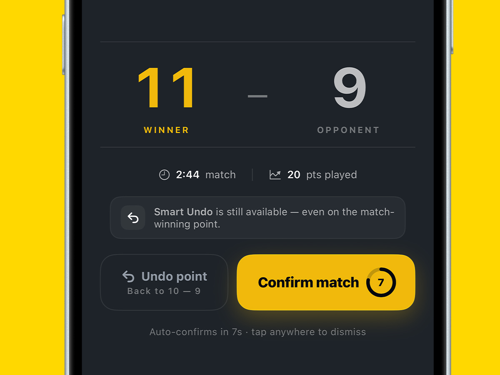
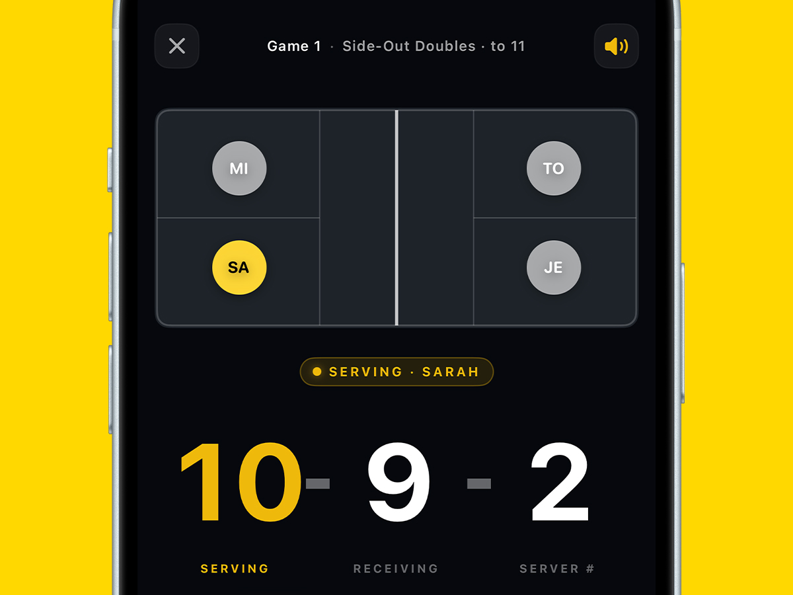
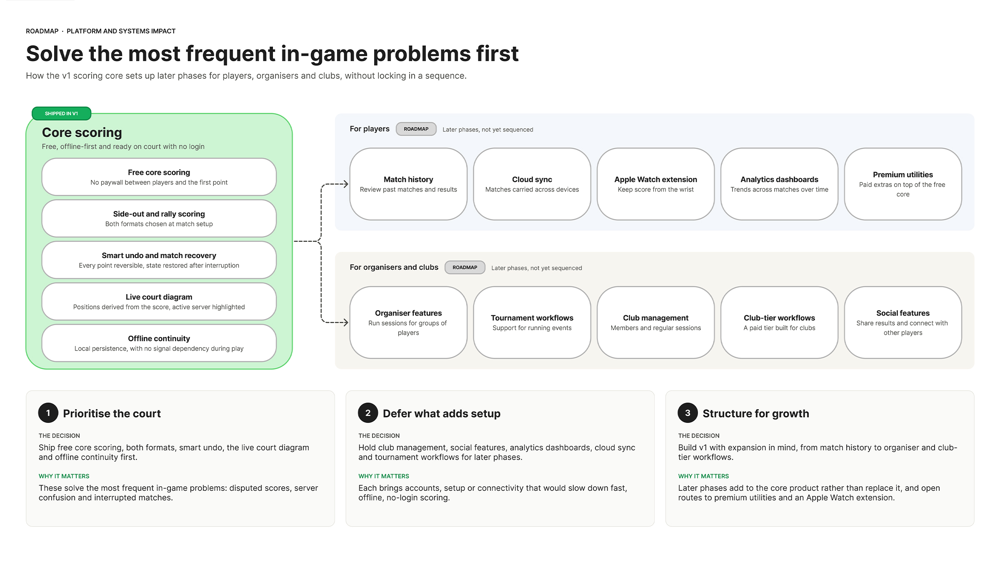

Type
Personal project, self-initiated
RallyLoop · Personal project · Native iOS app · Pickleball scoring
RallyLoop is a native iOS pickleball scoring app built to make live scoring clearer, faster, and easier to trust during play. It was a personal project, so I owned it end to end. I defined the product, designed the experience, and used Claude Code to prototype, build, refine, and ship the app myself.
The goal was simple. Help players know the score, know who is serving, and know where to stand, without remembering rules mid-game. Rather than another generic score tracker, I focused on rule accuracy, instant recovery from mistakes, offline reliability, and a visual court model that reduces confusion in real time.

Challenge
Pickleball scoring becomes surprisingly complex once players move beyond casual play, especially across side-out doubles, rally scoring, server identity, and court positioning. Existing apps were falling short in three ways.
That created a clear product opportunity, a scoring experience that works in real playing conditions, supports both traditional and emerging formats, and keeps players focused on the game instead of the app. It also had to hold up to bright sunlight, one-thumb use, accidental taps, patchy signal, and the mental load of making decisions mid-rally.
Role and scope
Because this was a personal project, my role spanned product strategy, UX, UI, prototyping, implementation direction, and release. I owned the work from problem framing through to production-ready behaviour and release quality.
It meant working in a far more integrated way across design and front-end implementation than a traditional handoff model allows. Decisions about behaviour were made and tested in the product itself, not only in static files.
Research and approach
The challenge was not simply to make scorekeeping digital. It was to understand what breaks down for players during a real match, and how the product could reduce confusion without adding friction.
The direction was shaped around recurring pain points, such as accidental score taps, uncertainty about player positioning, weak support for rally scoring, and poor continuity when a match was interrupted. Three principles anchored the design, each with a direct design response.
Every core action is achievable in a moment.
Design responseLarge tap targets and no loading states anywhere in the scoring flow.
The app never depends on connectivity.
Design responseOffline-first persistence, with no login required to start a match.
Players are never asked to recall rules.
Design responseA court diagram that derives and displays positions automatically.
AI-assisted build workflow
A key part of this project was using Claude Code as an active product-development tool, not only as a writing or ideation assistant. I used it to translate requirements into working implementation, explore solution paths, structure logic, refine flows, and shorten the distance between a concept and something I could test.
This made the process more iterative and more honest. Instead of stopping at static mockups, I could work through product behaviour, edge cases, and UI decisions in running software. That mattered most where experience design and product logic were tightly coupled, such as score-state transitions, undo behaviour, onboarding, and match recovery.
Claude Code supported the workflow in five ways.
The value was not in replacing product design thinking. It was in extending it. I stayed responsible for the problem framing, the rules, the judgement calls, and the quality bar. Claude Code made it possible to act on those decisions directly, and to ship a stronger product than static design artefacts alone would have allowed.
01
Define the problem, the design principles, and a deliberately narrow v1 scope.
02
Write the scoring rules as explicit contracts and test scenarios that every build could be checked against.
03
Use Claude Code to turn flows into working screens, then judge them in the hand, not on a canvas.
04
Work through state transitions, undo, and recovery until the edge cases felt as solid as the happy path.
05
Check behaviour against the rule contracts across both scoring formats.
06
Prepare onboarding, App Store positioning, and release quality for launch.

Key product decision
The central decision was to make the app do more than record points. It needed to actively reduce disputes and uncertainty by showing score state, server identity, and court position together on one live surface.
That led to four core decisions.
Together, these shifted the app from a passive score display into an active in-game guide. Rather than asking players to interpret rules under pressure, the product translates scoring logic into something visible and immediate.

Designing for reliability
The biggest usability risk was trust. In a live game, a single mistaken tap can create friction between players, and most competitor apps treated the final point as irreversible. RallyLoop makes undo a first-class interaction, backed by persistent state recovery and an endgame flow that keeps the active score screen in place until the result is confirmed.
The second trust issue was rule complexity. Side-out doubles introduces a three-number score, server-number logic, and position rotation that many casual players do not fully remember under pressure. The answer was not more explanatory text. It was an interface that externalises the logic through well-timed onboarding, a computed score display, and an auto-updating court diagram.


Validation and iteration
Validation was built into the product at both the logic and the release level. The scoring engine was specified through explicit rule contracts and test scenarios covering four areas.
Writing the rules down this precisely also made AI-assisted building safer. Claude Code could work quickly because the expected behaviour was unambiguous, and every change could be checked against the same contracts.
Beyond the logic, I defined a measurement model to connect product quality with behaviour after launch.
The anti-metrics matter as much as the success signals. They help separate genuine adoption from surface-level activity, and point to where the next iteration should focus.
Platform and systems impact
Although v1 focused on fast, reliable scoring, the product was structured with broader expansion in mind. The scope was a deliberate trade-off.
Solving the most frequent in-game problems first gave the product a clear foundation, while leaving room for organiser features, premium utilities, an Apple Watch extension, and club-tier workflows. It also reflects the kind of systems thinking now expected of product designers who work with AI-assisted tooling and technical prototypes, not just interface comps.

Outcomes
01 · Gameplay
Side-out + rally scoring
Built to support both traditional and emerging pickleball scoring formats in one product experience.
02 · Product
Offline-first core flow
Designed to work on court with no login, no signal dependency, and no interruption to live play.
03 · Shipping
Personal project shipped with Claude Code
Developed as a self-initiated product using AI-assisted workflows to move from product concept to release-ready app.
Beyond feature delivery, the project demonstrated practical AI tool fluency, a stronger cross-functional design-to-build capability, and a product foundation ready for match history, organiser workflows, Apple Watch utility, and premium extensions.
Reflection
This project showed that even a simple sports utility becomes a serious product-design problem when the real challenge is trust, clarity, and translating rules under pressure.
It also reinforced the value of working beyond static screens. Using Claude Code as part of the process let me reason about product behaviour, implementation constraints, and edge cases directly, which made the design process more applied, more iterative, and ultimately shippable.
These are the lessons I take into any product.
More broadly, it reflects how product design is changing. Strong design work increasingly combines customer insight, systems thinking, interface craft, AI-assisted workflows, and enough technical fluency to help shape and ship the product, not just describe it.